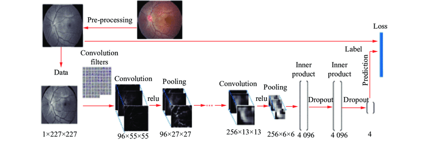

AI Cataract Detection Tool
Click below to access an AI-powered Cataract Detection Tool.
Use AI for Cataract DetectionUnderstanding Cataracts
Cataracts are a condition where the lens of the eye becomes cloudy, leading to blurry vision. This is a common cause of vision loss, especially in older adults. Cataracts can occur in one or both eyes and may lead to difficulty in seeing clearly, especially in low light or while reading.
Early detection of cataracts is crucial for preventing vision impairment. AI models, especially those trained on large datasets of eye images, can help in identifying cataracts at an early stage, even before symptoms appear.
Why Use AI for Cataract Detection?
AI models offer significant advantages for detecting cataracts with high accuracy and speed:
Speed
AI can analyze eye images and detect cataracts within seconds, which is much faster than manual assessment.
Accuracy
AI-powered models can detect cataracts at an early stage with up to 95% accuracy, enabling early intervention.
Consistency
AI ensures consistent results, reducing the chances of misdiagnosis and human error in detecting cataracts.
How AI Detects Cataracts
AI models analyze eye images by performing several steps, from image preprocessing to final diagnosis:
| Step | Process | Impact |
|---|---|---|
| Image Preprocessing | Enhances and normalizes eye images for optimal clarity. | Improves image quality for more accurate results. |
| Cataract Detection | AI scans the eye images to detect any clouding of the lens. | Identifies early-stage cataracts before they become noticeable. |
| Classification | Classifies the severity of the cataract. | Assists in determining the best treatment plan. |
Key Statistics
Sample Eye Image
This is an example of an eye image with a cataract. AI models can detect cataracts in these images with high precision, aiding early treatment.